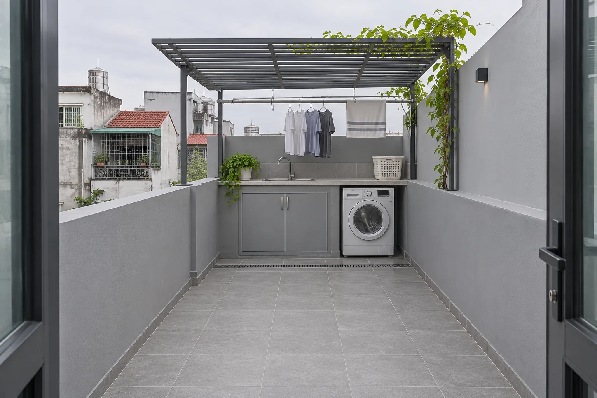
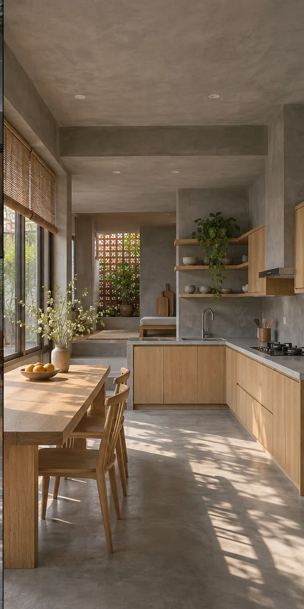

Thương mại

Quán Nhỏ Hiên Gỗ
Mặt bằng hẹp ngang 3.2m, gia cố dầm thép I-200 chịu lực mở rộng không gian đón khách.
Tất cả các công trình dưới đây đều được chụp ảnh hiện trạng thực tế và lưu giữ đầy đủ bản vẽ kết cấu chi tiết. Bạn có thể lọc theo loại hình công trình đang quan tâm.
Mặt bằng hẹp ngang 3.2m, gia cố dầm thép I-200 chịu lực mở rộng không gian đón khách.

Ngăn vách kính trượt cách âm không ray sàn, tạo 2 góc làm việc độc lập.

Chống thấm màng khò nhiệt polymer, tạo độ dốc thoát nước và giàn cây xanh.

Cắt sàn bê tông mở khoang thông gió tự nhiên, ốp lam đất nung chắn nắng.

Tổ chức lại tam giác bếp, làm đường hút mùi âm tường không ồn cho nhà nhỏ.

Hệ giá sách chịu tải cao kết hợp sàn gác xép thép nhẹ trong căn nhà ngõ sâu.